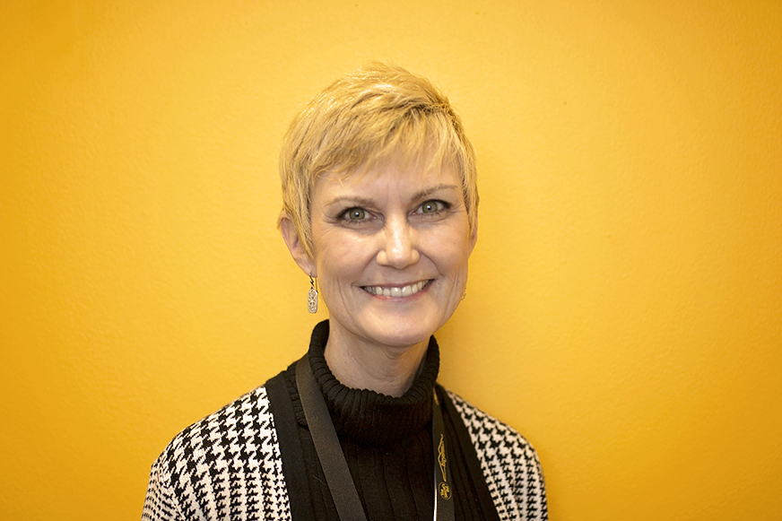

Svetlana Peltsverger, Ph.D., CISSP
Position: Associate Dean of the College of Computing and Software Engineering
Phone: (470) 578-3813
Email: speltsve@kennesaw.edu
Location: J 378C
Research Interest: Security, Databases, Distributed computing and Privacy

Dawn Tatum, Director
Position: Director of Partnerships & Engagements for CCSE
Phone: (470) 578-3797
Email: dtatum7@kennesaw.edu
Location: J 358
Research Interest: Computer Programming, Software Engineering, Project Management, Leadership, Networking, Information Security and Ethics.